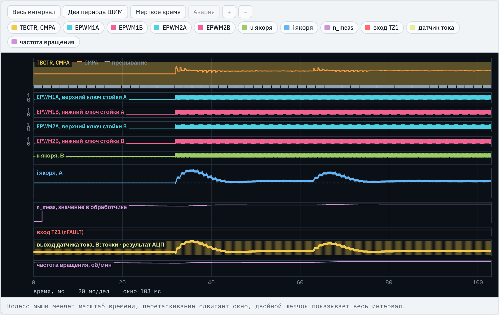
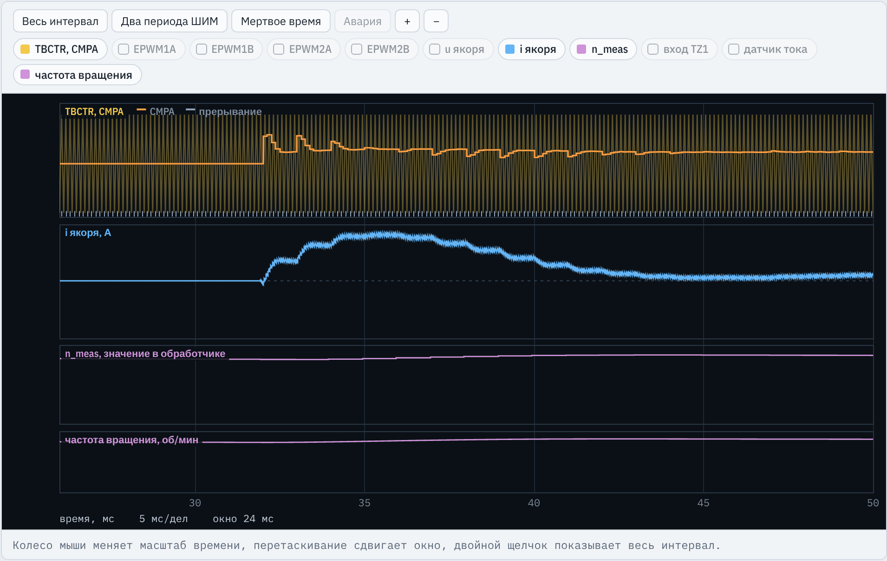
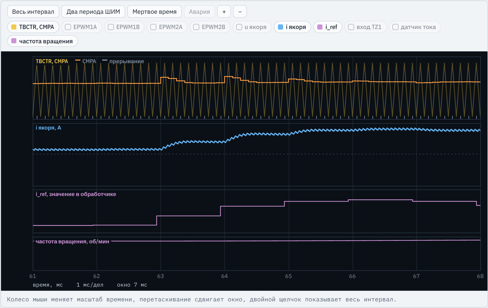
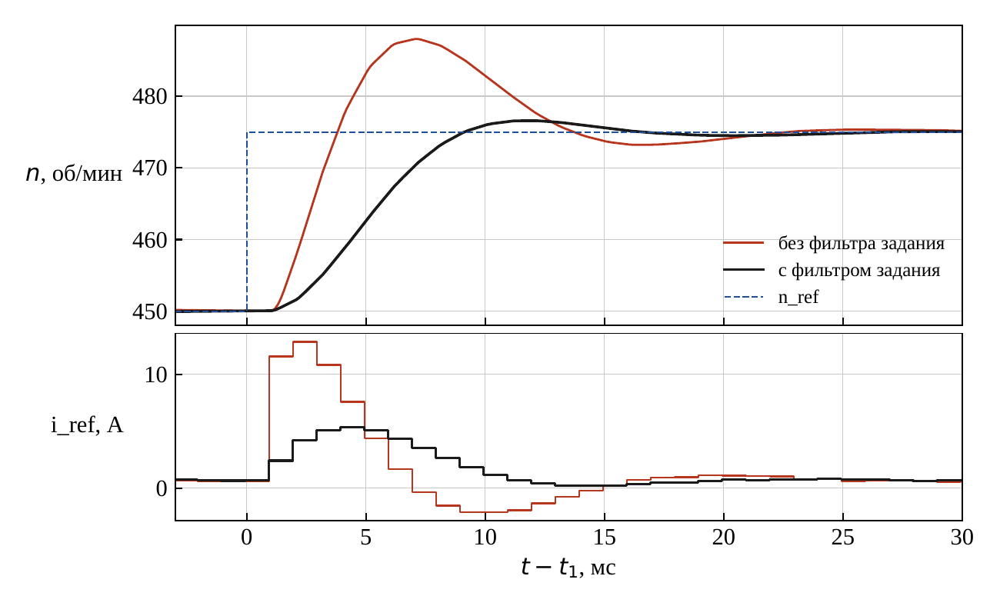
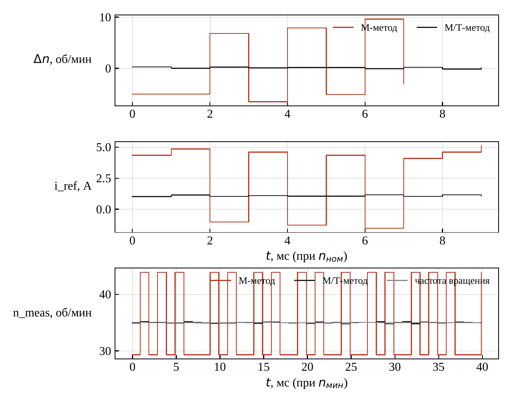

TMS320F2837xD · ЛАБОРАТОРНАЯ РАБОТА № 4
Энкодер и модуль eQEP1, измерение скорости М/Т-методом, ПИ-регулятор скорости на симметричный оптимум, компенсация ЭДС
Место работы в курсе
TBCTR = TBPRDШИМ, АЦП, калибровка, защита и регулятор тока переносятся без изменений. Добавляются функции InitEQep1(), SpeedMeas(), SpeedCtrl(), счетчик вызовов spd_cnt и слагаемое KE * w_meas в регуляторе тока.
Стенд C2000 · ЛР4. Контур скорости ДПТ
2 / 24
Инженерная задача
об/мин, задает испытание
1/(4Tμωs + 1)
ПИ, симметричный оптимум, ±Iогр
1/(2Tμs + 1), компенсация ЭДС
kM/(JΣs), момент Mс
М/Т-метод, ωизм раз в Tω
Измеренная скорость ωизм вычитается из задания после фильтра. Контур скорости выполняется в обработчике АЦП один раз за Nω вызовов: в варианте 1 Nω = 8, Tω = 1 мс.
погрешность измерения скорости и пульсации задания тока
провал скорости при набросе момента и возврат к заданию
ток не выше Iогр, без перерегулирования скорости
на вращающийся двигатель без броска тока
Стенд C2000 · ЛР4. Контур скорости ДПТ
3 / 24
Что делает студент
KE … KFSpeedMeas() раз в Nω вызовов во всех состояниях, SpeedCtrl() – в ST_RUNSpeedMeas()KE * w_meas в регуляторе токаmain(), интерфейсные переменные n_ref, n_meas, i_ref, i_meas, макросы CPR, T_SPD, T_CAP, K_POS, N_MT, T_HOLD.
Перенести из ЛР3: InitAdcA(), InitEPwmLeg(), PwmTrip(), PwmEnable(), обработчик прерывания.
Результат: протокол приемочных испытаний (14 проверок) и отчет с исследованием способов измерения скорости и настройки регулятора.
Стенд C2000 · ЛР4. Контур скорости ДПТ
4 / 24
Задание 1
Данные: fШИМ = 8,0 кГц, N = 2048, Nω = 8, JΣ = 1,2·10−3 кг·м², kM = 0,115, Iогр = 13,1 А, Mтр = 0,121 Н·м, ΔMс = 0,604 Н·м
| Величина | Формула | Вариант 1 |
|---|---|---|
| Импульсов на оборот Z | Z = 2N (XCR = 1) | 4096 |
| Период контура скорости | Tω = Nω/fШИМ | 1,000 мс |
| Некомпенсируемая постоянная | Tμω = 2Tμ + Tω | 1,250 мс |
| Коэффициенты регулятора | Kpω = JΣ/(2kMTμω), Kiω = Kpω/(4Tμω) | 4,174 А·с/рад; 834,8 А/рад |
| Фильтр задания | Kф = Tω/(4Tμω + Tω) | 0,1667 |
| Цена импульса М-метода | Δnкв = 60/(Z Tω) | 14,6 об/мин |
| Делитель таймера захвата | CCPS по формуле (5) методички | 3 |
| Провал при набросе | Δω ≈ 1,77 ΔMс Tμω/JΣ | 10,6 об/мин |
| Время разгона до nном | tр ≈ JΣωном/(kMIогр − Mтр) | 136 мс |
Стенд C2000 · ЛР4. Контур скорости ДПТ
5 / 24
Структура программы
InitEQep1() вместе с ePWM, АЦП, TZ1
каждый период ШИМ, 8 кГц
как в ЛР3
раз в 8 вызовов, 1 мс
измерение всегда, регулятор в ST_RUN
u + KE·w_meas, CMPA
256 периодов ШИМ (32 мс): калибровка нуля датчика тока, выходы отключены, скорость уже измеряется
PwmEnable(); xw = 0, w_f = w_meas; работают контур скорости и контур тока
PwmTrip() при |i| > I_TRIP или коде АЦП 0 и 4095, как в ЛР3
Стенд C2000 · ЛР4. Контур скорости ДПТ
6 / 24
Задание 1
lr4_reference.c, макросы
#define KE 0.1150f // коэффициент ЭДС и момента, В*с/рад #define J_SUM 1.200e-3f // суммарный момент инерции, кг*м^2
JΣ = 1,200 г·м² из таблицы вариантов; kЕ = kM
#define ENC_LINES 2048 // число штрихов энкодера #define N_SPD 8 // период контура скорости в периодах ШИМ
Z = 2N = 4096; Tω = 8/8000 = 1 мс
#define I_LIM 13.1f // ограничение задания тока, АIогр из варианта, ниже уставки защиты 15,8 А
#define CCPS_VAL 3 // CAPCLK = SYSCLK / 2^CCPS #define UPPS_VAL 0 // событие захвата на каждом импульсе счета
fCAP = 25 МГц, шаг 40 нс, диапазон таймера 2,62 мс
#define T_MUW (2.0f * T_MU + T_SPD)
контур тока 2Tμ и запаздывание Tω: 1,25 мс
#define KPW (J_SUM / (2.0f * KE * T_MUW)) #define KIW (KPW / (4.0f * T_MUW)) #define KF (T_SPD / (4.0f * T_MUW + T_SPD))
симметричный оптимум и фильтр: 4,174; 834,8; 0,1667
Стенд C2000 · ЛР4. Контур скорости ДПТ
7 / 24
Задание 2
lr4_reference.c, InitEQep1()
EALLOW;
GpioCtrlRegs.GPAPUD.bit.GPIO20 = 1; // выходы приемника сигналов энкодера двухтактные
GpioCtrlRegs.GPAPUD.bit.GPIO21 = 1;
GpioCtrlRegs.GPAPUD.bit.GPIO23 = 1;регистры GPIO защищены: запись между EALLOW и EDIS; 1 – подтяжка отключена
GpioCtrlRegs.GPAQSEL2.bit.GPIO20 = 0; // синхронизация с SYSCLK
GpioCtrlRegs.GPAQSEL2.bit.GPIO21 = 0;
GpioCtrlRegs.GPAQSEL2.bit.GPIO23 = 0;входы синхронизируются с SYSCLK без дополнительной задержки фронтов
GpioCtrlRegs.GPAMUX2.bit.GPIO20 = 1; // EQEP1A GpioCtrlRegs.GPAMUX2.bit.GPIO21 = 1; // EQEP1B GpioCtrlRegs.GPAMUX2.bit.GPIO23 = 1; // EQEP1I EDIS;
функция 1 выводов – входы EQEP1A, EQEP1B, EQEP1I; без нее счетчик не получает импульсов
Стенд C2000 · ЛР4. Контур скорости ДПТ
8 / 24
Задание 3
lr4_reference.c, InitEQep1()
EQep1Regs.QDECCTL.bit.QSRC = 0; // квадратурный декодер EQep1Regs.QDECCTL.bit.XCR = 1; // счет фронтов только канала A: два импульса на штрих
Z = 2N; интервалы между фронтами одного канала не зависят от ошибки фазы A и B
EQep1Regs.QPOSMAX = 0xFFFFFFFF;
EQep1Regs.QPOSINIT = 0;
EQep1Regs.QEPCTL.bit.PCRM = 1; // сброс только по переполнениюсчетчик проходит весь 32-разрядный диапазон; разность в int32 верна и при переходе через ноль
EQep1Regs.QEPCTL.bit.QCLM = 0; // защелка таймеров захвата при чтении QPOSCNT EQep1Regs.QEPCTL.bit.QPEN = 1; EQep1Regs.QEPCTL.bit.SWI = 1; // QPOSCNT = QPOSINIT
одно чтение QPOSCNT дает положение и время от последнего импульса; QPEN включает счетчик
EQep1Regs.QCAPCTL.bit.CEN = 0; EQep1Regs.QCAPCTL.bit.CCPS = CCPS_VAL; EQep1Regs.QCAPCTL.bit.UPPS = UPPS_VAL; EQep1Regs.QCAPCTL.bit.CEN = 1;
делители задаются при выключенном блоке захвата, затем блок включается
Стенд C2000 · ЛР4. Контур скорости ДПТ
9 / 24
Задания 4 и 7
lr4_reference.c, adca1_isr()
offset_code = cal_sum / CAL_N; xi = 0.0f; xw = 0.0f; w_f = w_meas; state = ST_RUN; PwmEnable();
конец калибровки: интеграл регулятора скорости обнуляется, фильтр задания начинает с измеренной скорости – безударное включение
if (++spd_cnt >= N_SPD)
{
spd_cnt = 0;
SpeedMeas();
if (state == ST_RUN) SpeedCtrl();
}контур скорости раз в 8 вызовов (1 мс); измерение во всех состояниях, регулятор – только при включенных выходах
u = KP * e + xi + KE * w_meas;
компенсация ЭДС kЕωизм: регулятор тока не отслеживает ЭДС интегралом
Стенд C2000 · ЛР4. Контур скорости ДПТ
10 / 24
Задание 5
ω = 2πΔx/(Z Tω): ошибка до одного импульса, Δnкв = 14,6 об/мин при любой скорости
по периоду QCPRD между импульсами: точен на низкой скорости, на высокой разрешение падает
Δx и Δt между первым и последним импульсом: ошибка определяется шагом таймера 40 нс и неравномерность штрихов
Стенд C2000 · ЛР4. Контур скорости ДПТ
11 / 24
Задание 5
lr4_reference.c, SpeedMeas()
pos = EQep1Regs.QPOSCNT; // чтение защелкивает QCTMRLAT tau = EQep1Regs.QCTMRLAT * T_CAP; // время от последнего импульса счета
положение и τ в один момент; T_CAP = 2CCPS/200 МГц = 40 нс
if (EQep1Regs.QEPSTS.bit.COEF) tau = 65535.0f * T_CAP; // импульсов не было дольше диапазона таймератаймер переполнился и остановился: τ не меньше 1,31 мс
EQep1Regs.QEPSTS.all = 0x008C; // сброс COEF, CDEF, UPEVNTфлаги сбрасываются записью единицы: биты 7, 3, 2
t_acc += T_SPD; dpos = (int32)(pos - pos_start);
Tинт растет на Tω; знак разности – направление вращения
Стенд C2000 · ЛР4. Контур скорости ДПТ
12 / 24
Задание 5
lr4_reference.c, SpeedMeas()
if (stopped && dpos != 0)
{
// первый импульс после остановки: интервал начинается с этого импульса
pos_start = pos;
tau_start = tau;
t_acc = 0.0f;
stopped = 0;
}после остановки отсчет начинается с импульса; иначе в интервал вошло бы время стоянки
else if (dpos >= N_MT || dpos <= -N_MT || t_acc >= T_HOLD)
{
dt = t_acc - tau + tau_start;интервал закрывается, когда набрано N_MT = 2 импульса или прошло T_HOLD = 20 мс;
Δt = Tинт − τk + τk−1
Стенд C2000 · ЛР4. Контур скорости ДПТ
13 / 24
Задание 5
lr4_reference.c, SpeedMeas()
if (dpos == 0 || dt <= 0.0f) { w_meas = 0.0f; stopped = 1; }
else w_meas = K_POS * dpos / dt;ω = 2πΔx/(ZΔt), K_POS = 2π/Z рад на импульс; нет импульсов за 20 мс – скорость ноль
spd_ready = 1;
есть первое измерение: регулятор скорости может работать
pos_start = pos;
tau_start = tau;
t_acc = 0.0f;
}конец интервала – начало следующего: положение и τk запоминаются
n_meas = w_meas / RPM2RAD;
n_meas в об/мин – контролируемая переменная испытаний (проверки 4, 5, 11)
Стенд C2000 · ЛР4. Контур скорости ДПТ
14 / 24
Задание 6
lr4_reference.c, SpeedCtrl()
if (!spd_ready) { w_f = w_meas; xw = 0.0f; i_ref = 0.0f; return; }безударное включение: до первого измерения регулятор не работает
w_f += KF * (n_ref * RPM2RAD - w_f);
фильтр задания: перерегулирование 43 % снижается до 8,1 %
e = w_f - w_meas; iw = KPW * e + xw;
ошибка, рад/с; выход регулятора – задание тока, А
if (iw > I_LIM) { iw = I_LIM; if (e < 0.0f) xw += KIW * T_SPD * e; }
else if (iw < -I_LIM) { iw = -I_LIM; if (e > 0.0f) xw += KIW * T_SPD * e; }
else { xw += KIW * T_SPD * e; }ограничение ±Iогр с условным интегрированием: на ограничении интеграл меняется только в сторону выхода из него
i_ref = iw;
задание контуру тока, обновляется раз в Tω
Стенд C2000 · ЛР4. Контур скорости ДПТ
15 / 24
Осциллограф

TBCTR, CMPA — счетчик ePWM1, уставка CMPA, отметки прерываний
EPWM1A … EPWM2B — ключи стоек A и B
i якоря — ток якоря, А
n_meas — измеренная скорость в обработчике, об/мин
частота вращения — скорость модели, об/мин
До 31,9 мс – калибровка, выходы отключены, n_meas уже измеряется. После включения ток около 7 А возвращает скорость к 450 об/мин; при 62 мс задание увеличено с 450 до 475 об/мин.
Стенд C2000 · ЛР4. Контур скорости ДПТ
16 / 24
Осциллограф

TBCTR, CMPA — до 31,9 мс CMPA = TBPRD/2, затем меняется регулятором тока
i якоря — после включения нарастает ступенями вслед за i_ref
n_meas — ступени раз в 1 мс
частота вращения — плавно растет к заданию
Ступени тока следуют за заданием i_ref, которое меняется раз в Tω = 1 мс. Фильтр задания начинает с измеренной скорости, поэтому ток растет постепенно и к 44 мс возвращается к току трения.
Стенд C2000 · ЛР4. Контур скорости ДПТ
17 / 24
Осциллограф, увеличенный фрагмент

TBCTR, CMPA — отметки прерываний внизу: 8 за 1 мс
i якоря — отрабатывает каждую ступень задания за доли миллисекунды
i_ref — выход регулятора скорости, А
частота вращения — растет после скачка задания
Задание n_ref изменено при 62 мс, регулятор скорости отвечает в ближайшем вызове, около 62,9 мс: запаздывание до Tω. Ступени i_ref строго через 8 периодов ШИМ – это проверка 3.
Стенд C2000 · ЛР4. Контур скорости ДПТ
18 / 24
Результаты эталона, вариант 1

с фильтром задания — перерегулирование около 6 %, задание достигается примерно за 9 мс
без фильтра — до 488 об/мин: около 52 %, i_ref до 12,8 А при Iогр = 13,1 А
n_ref — скачок с 450 до 475 об/мин при t1
Рисунок 4 методических указаний. Требование проверки 7: перерегулирование не более 15 %, время нарастания до 0,9 не более 9Tμω = 11,25 мс, без ограничения тока.
Стенд C2000 · ЛР4. Контур скорости ДПТ
19 / 24
Результаты эталона, вариант 1

М-метод — ошибка до ±10 об/мин, i_ref скачет от −1,5 до 4,9 А; при nмин только 29,3 или 43,9 об/мин
М/Т-метод — ошибка доли об/мин, i_ref около 1,1 А
частота вращения — скорость модели при nмин = 35 об/мин
Рисунок 8 методических указаний. Сверху вниз: ошибка измерения и i_ref при nном, n_meas при nмин. Допуски: 1,5 об/мин (проверка 4), 1,58 А (проверка 6), 1,75 об/мин (проверка 5).
Стенд C2000 · ЛР4. Контур скорости ДПТ
20 / 24
Приемочные испытания
| № | Что проверяется | Требование (вариант 1) | Почему важно |
|---|---|---|---|
| 1 | Силовая часть и контур тока, режимы A–E | требования ЛР1–ЛР3 | контур скорости опирается на исправный контур тока |
| 2 | Подключение энкодера, режим C | принимаются все импульсы канала A, знак скорости верный | ошибка знака – положительная обратная связь |
| 3 | Период контура скорости, режим A | i_ref меняется раз в 8 периодов ШИМ (1 мс) | на Tω рассчитаны Kpω, Kiω, Kф |
| 4 | Измерение при nном, режим C | погрешность n_meas не более 1,5 об/мин (0,1 %) | точность поддержания скорости |
| 5 | Измерение при nмин, режим E | не более 1,75 об/мин (5 % от 35 об/мин) | на низкой скорости импульсов мало |
| 6 | Пульсации задания тока, режим C | размах i_ref не более 1,58 А (15 % Iном) | пульсации тока – пульсации момента и нагрев |
| 7 | Переходная характеристика, режим A | перерегулирование ≤ 15 %, нарастание ≤ 11,25 мс, без ограничения тока, ошибка ≤ 0,5 % | качество настройки регулятора и фильтра |
Стенд C2000 · ЛР4. Контур скорости ДПТ
21 / 24
Приемочные испытания
| № | Что проверяется | Требование (вариант 1) | Почему важно |
|---|---|---|---|
| 8 | Наброс нагрузки, режим B | провал ≤ 17,0 об/мин, восстановление ≤ 31 мс (25Tμω), ошибка ≤ 0,5 % | астатизм по моменту нагрузки |
| 9 | Разгон с ограничением тока, режим C | ток ≤ 13,8 А, до 0,9nном ≤ 147 мс, перерегулирование ≤ 5 % | ограничение тока и условное интегрирование |
| 10 | Компенсация ЭДС, включение при вращении, B и C | без отключения, ток ≤ 13,1 А, снижение скорости ≤ 5 %; ошибка тока при разгоне ≤ 52,5 мА | безударное включение, ток следует заданию |
| 11 | Реверс, режим D | без отключения, перерегулирование ≤ 5 %, ошибка и погрешность ≤ 7,5 об/мин | переход через ноль скорости |
| 12 | Работа на низкой скорости, режим E | среднее 35 ± 0,7 об/мин, отклонения ≤ ±3,5 об/мин | равномерность вращения |
| 13 | Включение выходов и защита, A–E | выходы отключены при калибровке, включены до 42 мс, отключений нет | безопасный пуск |
| 14 | Правила программирования | EALLOW/EDIS, сброс ADCINT1, PIEACK, переменные n_ref, n_meas, i_ref, i_meas | перенос на реальный кристалл |
Стенд C2000 · ЛР4. Контур скорости ДПТ
22 / 24
Типовые ошибки
| Ошибка в программе | Что происходит | Проверки |
|---|---|---|
| М-метод вместо М/Т-метода | ошибка до цены импульса, пульсации i_ref | 4, 5, 6, 11, 12 |
| QPOSMAX = Z − 1 | раз за оборот разность скачет на −Z | 4, 6, 8–11, 13 |
| каналы A и B перепутаны | знак скорости обратный, обратная связь положительная | 2–5, 7–12 |
| нет компенсации ЭДС | ток отстает от задания при разгоне | 10 |
| нет условного интегрирования | перерегулирование после разгона и реверса | 9, 11 |
| нет фильтра задания | перерегулирование около 50 % | 7 |
| T_MUW без T_SPD | завышенные Kpω и Kiω | 4–8, 12 |
| нет ограничения задания тока | ток при разгоне выше уставки защиты | 2, 4, 6, 9–11, 13 |
| регулятор скорости каждый период ШИМ | неверный период интегрирования и интервал измерения | 3–5, 7–12 |
| нет безударного включения | фильтр задания начинает с нуля | 10 |
Стенд C2000 · ЛР4. Контур скорости ДПТ
23 / 24
Порядок выполнения
Стенд C2000 · ЛР4. Контур скорости ДПТ
24 / 24